Precalculus – Unit 03: Radical Functions
Essential Standard
Learning Target: Students will solve equations using square roots and cube roots.
- I can solve equations of the form x² = d and x³ = d using roots.
- I can solve transformed equations involving squared or cubed expressions.
- I can verify solutions to equations solved using roots.
Learning Target: Students will solve equations involving square roots and identify extraneous solutions.
- I can isolate square root expressions in equations.
- I can solve square root equations with constants or variable terms on both sides.
- I can identify and explain extraneous solutions in square root equations.
Learning Target: Students will solve equations involving cube roots.
- I can isolate cube root expressions in equations.
- I can solve cube root equations involving transformed expressions.
- I can verify solutions to cube root equations algebraically.
Learning Target: Students will analyze and graph square root and cube root functions using transformations and key features.
- I can graph square root and cube root functions using transformations.
- I can determine the domain and range of radical functions from graphs and equations.
- I can identify key features of radical functions, including intercepts, locator points, extrema, and intervals of increase or decrease.
Learning Target: Students will explore functions with rational exponents and connect their graphs to radical structure.
- I can rewrite expressions using rational exponents and radicals.
- I can graph functions with rational exponents using technology.
- I can interpret key features of functions with rational exponents from their graphs.
Learning Ladder
| Rung | I Can Statement | Math Practice | DOK | Level |
|---|---|---|---|---|
| 8 | I can model or analyze a real-world situation involving radical functions, justify the chosen representation, evaluate the reasonableness of solutions, and explain any restrictions or extraneous results in context. | 4. Model with Math / 3. Construct Arguments | DOK 4 | Above |
| 7 | I can design and defend a solution strategy for a multi-step radical equation or radical function problem, compare approaches, and critique errors involving roots, domains, or extraneous solutions. | 1. Make Sense & Persevere / 3. Construct Arguments | DOK 4 | Above |
| 6 | I can analyze radical functions using multiple representations and explain how transformations affect domain, range, intercepts, locator points, extrema, and intervals of increase or decrease. | 7. Look for Structure / 8. Look for Regularity | DOK 3 | Essential |
| 5 | I can solve radical equations, verify solutions, and explain why extraneous solutions can occur when equations are squared. | 2. Reason Abstractly & Quantitatively / 6. Attend to Precision | DOK 3 | Essential |
| 4 | I can graph square root and cube root functions using transformations and identify key features from graphs and equations. | 5. Use Tools Strategically / 7. Look for Structure | DOK 2 | Essential |
| 3 | I can solve square root and cube root equations by isolating the radical expression and applying inverse operations. | 6. Attend to Precision | DOK 2 | Essential |
| 2 | I can solve equations using square roots and cube roots and verify solutions by substitution. | 2. Reason Abstractly | DOK 1 | Essential |
| 1 | I can rewrite radical expressions using rational exponents and identify basic domain restrictions of radical functions. | 1. Make Sense of Problems | DOK 1 | Essential |
Progress Tracking
Assessment Methods by DOK Level
Format: 3–5 minute warm-up, quick check, or exit ticket
Purpose: Check whether students can evaluate roots, rewrite radicals using rational exponents, solve basic root equations, and recognize simple domain restrictions.
Assessment Ideas
- Root Equation Fluency Check Can Be Assessed After Unit 5, Section 1 – Students solve equations using roots and verify solutions by substitution.
- Rational Exponent Rewrite Check Can Be Assessed After Unit 5, Section 5 – Students rewrite expressions between radical and rational exponent form.
- Basic Radical Domain Check Can Be Assessed After Unit 5, Section 4 – Students identify the domain of simple radical functions.
- Radical Evaluation Check Can Be Assessed After Unit 5, Section 5 – Students evaluate radical functions for given inputs and identify invalid inputs.
Students who struggle here need more direct practice with root meanings, inverse operations, notation, and domain restrictions before moving into multi-step equations or graph analysis.
Format: Exit ticket, partner check, whiteboard response, or short written explanation
Purpose: Check whether students can apply procedures, graph transformed radical functions, identify key features, and connect algebraic steps to graphical meaning.
Assessment Ideas
- Solve and Verify Radical Equation Task Can Be Assessed After Unit 5, Section 1 – Students solve radical equations and verify solutions.
- Transformation Graphing Task Can Be Assessed After Unit 5, Section 4 – Students graph square root or cube root functions using transformations.
- Domain and Range from Equation or Graph Can Be Assessed After Unit 5, Section 4 – Students determine domain and range from radical equations and graphs.
- Rational Exponent Graphing Check Can Be Assessed After Unit 5, Section 5 – Students analyze rational exponent functions using technology.
Students at this level can usually carry out procedures, but the check reveals whether they understand restrictions and graph behavior.
Format: Constructed response, error analysis, gallery walk, or group explanation
Purpose: Check whether students can reason strategically, justify solutions, explain extraneous results, and connect multiple representations of radical functions.
Assessment Ideas
- Extraneous Solution Explanation Can Be Assessed After Unit 5, Section 2 – Students solve a square root equation that produces an extraneous solution, identify the invalid solution, and explain why it appeared.
- Radical Function Analysis Task Can Be Assessed After Unit 5, Section 4 – Students analyze a transformed radical function using an equation, graph, and table, then explain domain, range, intercepts, extrema, and intervals of increase or decrease.
- Compare Square Root and Cube Root Structure Can Be Assessed After Unit 5, Section 3 – Students compare transformations and key features of square root and cube root functions, explaining similarities and differences in domain, range, and graph behavior.
- Error Analysis Response Can Be Assessed After Unit 5, Section 5 – Students critique an incorrect radical equation solution, identify the misconception, correct the work, and explain how to avoid the error.
This level shows whether students understand the mathematics behind the procedures. These tasks are useful for deciding who is ready for modeling or who needs reteaching on verification, restrictions, and graph structure.
Format: Performance task, extended response, modeling task, or strategy defense
Purpose: Check whether students can synthesize solving, graphing, domain reasoning, and interpretation in unfamiliar or contextual situations.
Assessment Ideas
- Radical Modeling Task Can Be Assessed After Unit 5, Section 5 – Students model a situation using a radical function, interpret the meaning of the domain and range, and justify whether the model is reasonable.
- Design-a-Radical-Function Task Can Be Assessed After Unit 5, Section 5 – Students create a radical function that satisfies given conditions involving domain, range, intercepts, transformations, and key features, then justify their design.
- Strategy Defense Task Can Be Assessed After Unit 5, Section 5 – Students solve a multi-step radical equation using a chosen strategy, verify all solutions, and defend why the method is efficient and reliable.
- Critique and Redesign Task Can Be Assessed After Unit 5, Section 5 – Students evaluate a flawed radical equation or function analysis, identify errors involving roots, restrictions, or extraneous solutions, and revise it into a correct solution.
DOK 4 tasks show whether students can transfer radical function understanding to unfamiliar situations. These are best used sparingly as performance checks, extensions, or summative-level tasks.
Summative Assessment Plan
Unit 3 Summative Assessment Unit 3 Assessed During Unit 5
Assessment is designed for a 45-minute paper-only time limit and is built around balanced evidence rather than a fixed question-count breakdown. Each version includes a mix of procedural fluency, graphing/application tasks, and short reasoning or critique prompts aligned to the unit learning targets and Depth of Knowledge expectations.
Assessments emphasize algebraic accuracy, interpretation of mathematical structure, graphing and representation skills, explanation of reasoning, and application of concepts in both familiar and unfamiliar situations.
Summative assessments are intentionally focused on DoK 1–3 evidence within a paper-only environment. Extended DoK 4 modeling, investigation, performance, or technology-based tasks are assessed separately through activities, investigations, discourse tasks, or formative performance assessments rather than embedded directly into the summative exam.
Holistic Rubric
The student demonstrates a strong and flexible understanding of Unit 3 concepts. Work is accurate, well-organized, and supported by clear reasoning.
The student demonstrates solid understanding of the essential Unit 3 concepts. Most work is accurate, and the student can complete standard and moderately complex tasks independently.
The student demonstrates partial but passable understanding of Unit 3 concepts.
The student does not yet demonstrate sufficient understanding of the essential Unit 3 concepts.
Strictly Assessment Bank
Unit 3 Assessment Bank: Problems are organized by Depth of Knowledge and pulled from the uploaded teacher banks. These are intended as source items for formative assessments, reassessments, and summative assessment versions.
Rolling timing: Unit 3 is assessed during Unit 5.
Solve: \[x^2=49\]
Solve: \[x^3=125\]
Solve: \[x^2=81\]
Solve: \[x^3=-64\]
Evaluate:
- \(\sqrt{144}\)
- \(\sqrt[3]{-216}\)
- \(\sqrt{0}\)
Solve: \[(x-4)^2=36\]
Solve: \[(x+2)^3=-27\]
Solve: \[5x^2=80\]
Solve: \[2(x-1)^2=18\]
Solve: \[3(x+2)^3=192\]
Fill in the blanks.
- If \(x^2=25\), then \(x=\) __________
- If \(x^3=-8\), then \(x=\) __________
- The square root of a positive number has __________ real solutions.
Determine whether each equation has two real solutions, one real solution, or no real solutions.
- \(x^2=36\)
- \(x^2=-9\)
- \(x^3=-27\)
Simplify completely.
- \(\sqrt{72}\)
- \(\sqrt[3]{54}\)
- \(\sqrt{50x^2}\)
Solve: \[\sqrt{x}=7\]
Solve: \[\sqrt{x+5}=9\]
Solve: \[\sqrt{x-3}=4\]
Solve: \[2\sqrt{x}=12\]
Solve: \[\sqrt{x}+3=10\]
Solve: \[\sqrt{x-1}+5=11\]
Solve: \[3\sqrt{x+2}=15\]
Solve: \[\sqrt{2x+1}=5\]
Solve: \[\sqrt{4x-7}=3\]
State the first step needed to solve each equation.
- \(\sqrt{x+4}+2=9\)
- \(3\sqrt{x-1}=18\)
- \(\sqrt{2x+5}=x-1\)
Determine whether each value is a solution to \(\sqrt{x+6}=x\).
- \(x=3\)
- \(x=-2\)
- \(x=6\)
Fill in the blanks.
- To solve a square root equation, first __________ the radical.
- After squaring both sides, you must __________ your solution.
- A solution that appears from algebra but does not work in the original equation is called __________.
Solve and check: \[\sqrt{x+12}=6\]
Solve: \[\sqrt[3]{x}=4\]
Solve: \[\sqrt[3]{x+5}=3\]
Solve: \[\sqrt[3]{x-7}=-2\]
Solve: \[2\sqrt[3]{x}=10\]
Solve: \[\sqrt[3]{x}+6=1\]
Solve: \[3\sqrt[3]{x-2}=18\]
Solve: \[\sqrt[3]{2x+1}=5\]
Solve: \[\sqrt[3]{5x-4}=-3\]
State the first step needed to solve each equation.
- \(\sqrt[3]{x+4}+3=11\)
- \(5\sqrt[3]{x-2}=25\)
- \(\sqrt[3]{2x+1}=x\)
Fill in the blanks.
- To solve a cube root equation, first __________ the radical.
- After isolating, use the inverse operation of __________.
- Cube root equations typically produce __________ real solution(s).
Determine whether each value is a solution to \(\sqrt[3]{x+1}=2\).
- \(x=7\)
- \(x=8\)
- \(x=9\)
Solve and verify: \[\sqrt[3]{x+10}=4\]
Solve: \[4+\sqrt[3]{x-5}=1\]
Sketch the parent function \(f(x)=\sqrt{x}\). State the domain and range.
Sketch the parent function \(f(x)=\sqrt[3]{x}\). State the domain and range.
Complete a table of values for \(f(x)=\sqrt{x}\) using \(x=0,1,4,9,16\).
Complete a table of values for \(g(x)=\sqrt[3]{x}\) using \(x=-8,-1,0,1,8\).
Identify the domain of each function.
- \(f(x)=\sqrt{x-3}\)
- \(g(x)=\sqrt{x+5}\)
- \(h(x)=\sqrt[3]{x-4}\)
Identify the range of each function.
- \(f(x)=\sqrt{x}+2\)
- \(g(x)=\sqrt{x-4}-3\)
- \(h(x)=\sqrt[3]{x}+1\)
Describe the transformation from \(y=\sqrt{x}\).
- \(y=\sqrt{x-5}\)
- \(y=\sqrt{x}+4\)
- \(y=-\sqrt{x}\)
Describe the transformation from \(y=\sqrt[3]{x}\).
- \(y=\sqrt[3]{x+2}\)
- \(y=\sqrt[3]{x}-6\)
- \(y=-\sqrt[3]{x}\)
For \(f(x)=\sqrt{x-2}+3\), state the starting point/locator point.
For \(g(x)=\sqrt[3]{x+4}-1\), state the center/locator point.
Match each equation to its description.
- \(y=\sqrt{x}+5\)
- \(y=\sqrt{x-5}\)
- \(y=2\sqrt{x}\)
- \(y=-\sqrt{x}\)
Descriptions: reflected across the \(x\)-axis, shifted right 5, shifted up 5, vertically stretched by 2.
State whether each function is increasing, decreasing, or neither.
- \(f(x)=\sqrt{x}\)
- \(g(x)=-\sqrt{x}\)
- \(h(x)=\sqrt[3]{x}\)
Identify whether each graph would have an endpoint or continue forever in both directions.
- \(y=\sqrt{x}\)
- \(y=\sqrt[3]{x}\)
- \(y=\sqrt{x+6}-2\)
Rewrite in radical form: \[x^{1/2}\]
Rewrite in radical form: \[x^{1/3}\]
Rewrite in radical form: \[x^{3/2}\]
Rewrite in rational exponent form: \[\sqrt{x^5}\]
Rewrite in rational exponent form: \[\sqrt[3]{x^4}\]
Evaluate without a calculator: \[16^{1/2}\]
Evaluate without a calculator: \[27^{1/3}\]
Evaluate without a calculator: \[32^{2/5}\]
Evaluate without a calculator: \[81^{3/4}\]
Fill in the blanks.
- \(x^{1/2}\) means __________.
- \(x^{1/3}\) means __________.
- \(x^{m/n}\) can be written as __________.
Simplify: \[x^{1/2}\cdot x^{3/2}\]
Simplify: \[\frac{x^{5/3}}{x^{2/3}}\]
State whether each function has a domain of all real numbers or a restricted domain.
- \(f(x)=x^{1/2}\)
- \(g(x)=x^{1/3}\)
- \(h(x)=x^{2/3}\)
Solve \((x-5)^2=64\). Verify each solution.
Solve: \[2(x+1)^2-10=40\]
Solve: \[4(x-3)^3=108\]
Solve: \[5(x+2)^2+7=52\]
Solve: \[(x-1)^3+6=70\]
Solve \(7(x+4)^2=175\). Then verify both solutions.
Simplify and solve: \[\sqrt{3x^2}=6\]
Discuss why absolute value matters.
Use the table.
| \(x\) | \(-4\) | \(-3\) | \(-2\) | \(-1\) | \(0\) | \(1\) | \(2\) | \(3\) | \(4\) |
|---|---|---|---|---|---|---|---|---|---|
| \(y=x^2\) | \(16\) | \(9\) | \(4\) | \(1\) | \(0\) | \(1\) | \(4\) | \(9\) | \(16\) |
- Estimate solutions to \(x^2=10\).
- Explain why there are two solutions.
Use the graph of \(y=x^3\).
- Estimate the solution to \(x^3=20\).
- Explain why there is only one real solution.
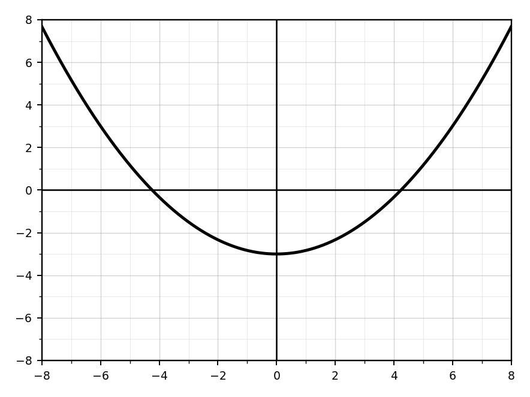
A square has area \(196\text{ ft}^2\).
- Write an equation for the side length.
- Solve.
- Explain why only one solution makes sense in context.
The volume of a cube is \(512\text{ in}^3\).
- Write an equation for the side length.
- Solve.
- Verify.
A student solves \((x-3)^2=49\) by writing \(x-3=7\).
Explain the mistake and solve correctly.
Solve \(2(x-5)^2+8=200\). Then check each solution algebraically.
Solve: \[\frac{1}{2}(x+6)^3=32\]
Solve and check: \[\sqrt{x+4}+2=8\]
Solve and check: \[5-\sqrt{x-1}=2\]
Solve: \[4\sqrt{2x-3}=20\]
Solve: \[\sqrt{3x+1}-4=5\]
Solve and check: \[2\sqrt{x+7}+1=9\]
Solve: \[\sqrt{x+10}=x\]
Solve: \[\sqrt{x+6}=x-2\]
Solve: \[\sqrt{2x+9}=x\]
Solve: \[\sqrt{x+3}=x-3\]
Solve and identify any extraneous solution: \[\sqrt{x+1}=x-1\]
Solve and identify any extraneous solution: \[\sqrt{2x+4}=x\]
A student solves \(\sqrt{x+5}=x-1\) and gets \(x=4\) and \(x=-1\).
- Check both solutions.
- Identify any extraneous solution.
- Explain why it is extraneous.
Use the table to estimate the solution to \(\sqrt{x+2}=x-2\).
| \(x\) | \(2\) | \(3\) | \(4\) | \(5\) | \(6\) | \(7\) |
|---|---|---|---|---|---|---|
| \(\sqrt{x+2}\) | \(2\) | \(\sqrt5\) | \(\sqrt6\) | \(\sqrt7\) | \(\sqrt8\) | \(3\) |
| \(x-2\) | \(0\) | \(1\) | \(2\) | \(3\) | \(4\) | \(5\) |
Explain how the table helps.
Use a graph to solve: \[\sqrt{x+4}=x-2\]
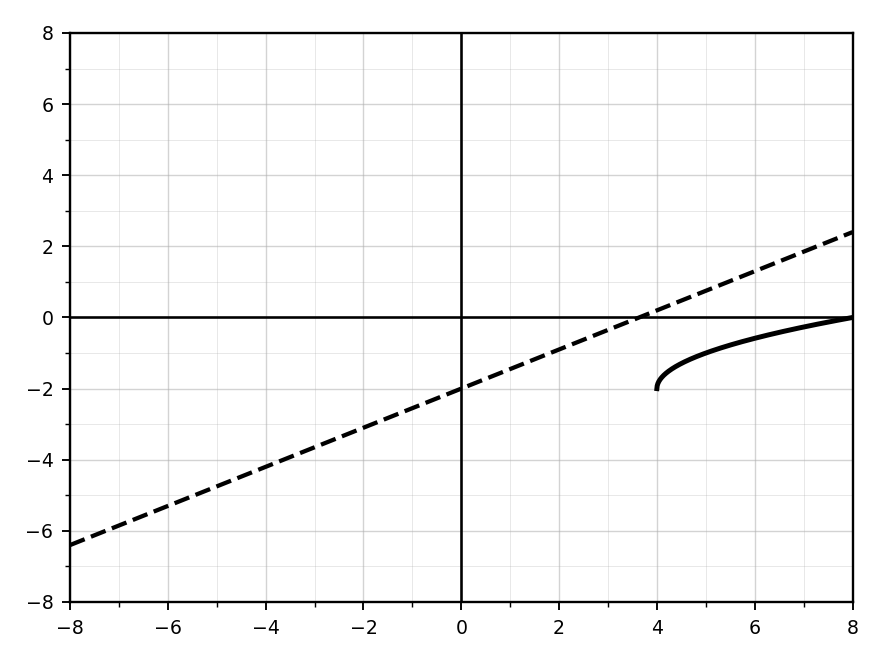
A square root equation has the possible solutions \(x=1\) and \(x=8\) after squaring. Explain why both must be checked in the original equation.
Solve and verify: \[\sqrt[3]{x+7}+2=6\]
Solve: \[5-\sqrt[3]{x-1}=3\]
Solve: \[4\sqrt[3]{2x-5}=12\]
Solve: \[\sqrt[3]{3x+4}-1=4\]
Solve and verify: \[2\sqrt[3]{x+8}+3=9\]
Solve: \[\sqrt[3]{x+1}=x\]
Solve: \[\sqrt[3]{x+8}=x-1\]
Solve: \[\sqrt[3]{2x+9}=x\]
Solve: \[\sqrt[3]{x+5}=x-2\]
A student solves \(\sqrt[3]{x+8}=x-1\) and gets \(x=2\).
- Verify the solution.
- Explain how checking works for cube root equations.
Use the table to estimate the solution to \(\sqrt[3]{x+1}=x-1\).
| \(x\) | \(0\) | \(1\) | \(2\) | \(3\) | \(4\) |
|---|---|---|---|---|---|
| \(\sqrt[3]{x+1}\) | \(1\) | \(\sqrt[3]{2}\) | \(\sqrt[3]{3}\) | \(\sqrt[3]{4}\) | \(\sqrt[3]{5}\) |
| \(x-1\) | \(-1\) | \(0\) | \(1\) | \(2\) | \(3\) |
Explain how the table helps estimate the solution.
Use a graph to solve: \[\sqrt[3]{x+4}=x-2\]

Solve \[2\sqrt[3]{x-1}-5=7\]
Then verify algebraically.
Solve: \[\sqrt[3]{4x+3}=2x-1\]
Graph \(f(x)=\sqrt{x-4}\). State the domain, range, and locator point.
Graph \(f(x)=\sqrt{x}+3\). State the domain, range, and \(y\)-intercept.
Graph \(f(x)=2\sqrt{x}\). Compare it to the parent function.
Graph \(f(x)=-\sqrt{x}+4\). State the domain, range, and intervals of increase or decrease.
Graph \(f(x)=\sqrt{x+2}-5\). State the domain and range.
Graph \(g(x)=\sqrt[3]{x-3}\). State the domain, range, and locator point.
Graph \(g(x)=\sqrt[3]{x}+4\). State the domain, range, and intercepts.
Graph \(g(x)=-\sqrt[3]{x}\). Describe the reflection and state intervals of increase or decrease.
Graph \(g(x)=2\sqrt[3]{x+1}-3\). State the locator point and describe all transformations.
Create a table of values and graph \(f(x)=\sqrt{x-1}+2\). Use at least four points.
Create a table of values and graph \(g(x)=\sqrt[3]{x+2}-1\). Use at least five points.
Given a graph of a square root function, identify the locator point, domain, range, and whether it is increasing or decreasing.

Given a graph of a cube root function, identify the locator point, domain, range, and intercepts.

A square root graph starts at \((3,-2)\) and increases to the right. Write a possible equation.
A cube root graph has locator point \((-4,5)\) and is reflected over the \(x\)-axis. Write a possible equation.
Rewrite each expression in radical form and simplify if possible.
- \(x^{5/2}\)
- \(x^{4/3}\)
- \(x^{-1/2}\)
Rewrite each expression using rational exponents.
- \(\sqrt[4]{x^3}\)
- \(\frac{1}{\sqrt{x}}\)
- \(\sqrt[3]{x^2y^4}\)
Simplify: \[(x^{2/3})(x^{5/3})\]
Simplify: \[(x^{3/4})^2\]
Simplify: \[\frac{x^{7/2}}{x^{3/2}}\]
Evaluate \(64^{2/3}\). Show two different methods.
Evaluate: \[125^{-2/3}\]
Use technology to graph \(f(x)=x^{1/2}\). State the domain, range, intercepts, and interval of increase/decrease.
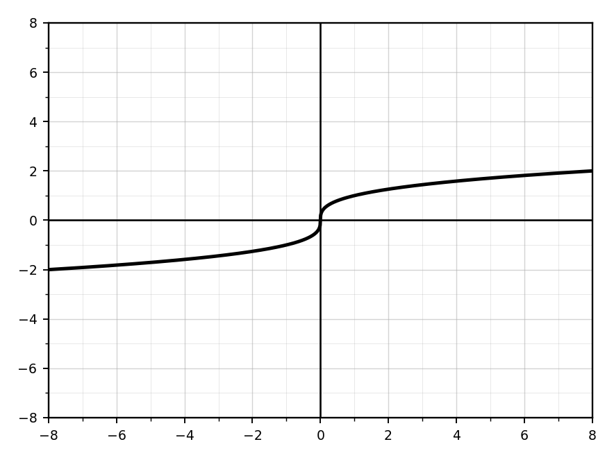
Use technology to graph \(g(x)=x^{1/3}\). State the domain, range, intercepts, and interval of increase/decrease.

Use technology to graph \(h(x)=x^{2/3}\). State the domain, range, intercepts, and symmetry.
Compare the graphs of \(f(x)=x^{1/2}\) and \(g(x)=x^{1/3}\). Explain how their domains and ranges differ.
Use a table to compare:
| \(x\) | \(-8\) | \(-1\) | \(0\) | \(1\) | \(8\) |
|---|---|---|---|---|---|
| \(x^{1/3}\) | |||||
| \(x^{2/3}\) |
Then describe how the graphs differ.
Graph \(f(x)=(x-2)^{1/2}+3\). State the domain, range, and locator point.
Graph \(g(x)=(x+4)^{1/3}-1\). State the domain, range, and locator point.
A student says \(x^{3/2}=x^3+x^{1/2}\). Explain the mistake and rewrite \(x^{3/2}\) correctly.
Explain why \(x^2=49\) has two real solutions while \(x^3=125\) has only one real solution.
A student says: “Taking the square root always gives one answer.” Is this true? Use examples and reasoning.
Compare solving \((x-2)^2=25\) and \((x-2)^3=27\). Explain why the solution processes are similar but the number of solutions differs.
A student solves \((x+1)^2=16\) as \(x+1=\pm16\).
- Identify the error.
- Solve correctly.
- Explain why the mistake changes the solutions.
A student claims: “If \(x^2=a\), then \(x=\sqrt{a}\).” Explain why this statement is incomplete.
Solve \((x-4)^2=81\). Then explain geometrically why the solutions are symmetric around \(x=4\).
Use the graph of \(y=x^2\).
- Explain why horizontal lines above the vertex intersect the graph twice.
- Explain why this creates two solutions.
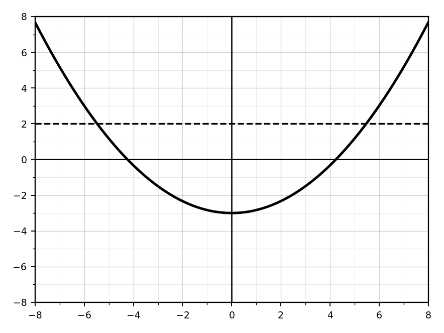
Use the graph of \(y=x^3\).
- Explain why every horizontal line intersects exactly once.
- Explain how this relates to solving cube root equations.
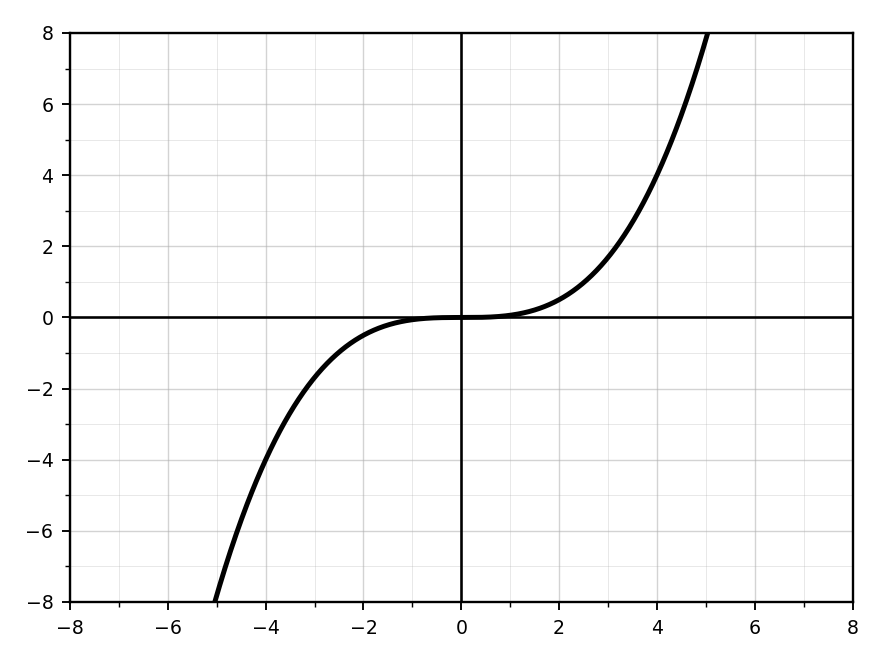
A function is defined by \(f(x)=x^2\).
- Explain why \(f\) is not one-to-one.
- Explain how this affects solving equations of the form \(x^2=d\).
A student solves \(3(x-1)^2=27\) and gets \(x=4\). Verify whether the solution is complete.
Explain why checking solutions is especially important when solving equations involving roots and powers.
Solve \((x+3)^3=-125\). Then explain why cube root equations do not produce the same “\(\pm\)” issue as square root equations.
Compare the graphs of \(y=x^2\) and \(y=x^3\). Explain how graph structure affects the number of solutions to equations involving roots.

Explain why squaring both sides of an equation can create extraneous solutions.
A student solves \(\sqrt{x+3}=x-1\). They square both sides and get \(x+3=x^2-1\).
- Identify the algebra mistake.
- Correct the equation after squaring.
- Solve correctly and check.
Solve \(\sqrt{x+6}=x\). Then explain why one solution works and the other does not.
Solve \(\sqrt{3x+4}=x+2\). Then explain why checking is required even if the algebra seems correct.
Solve \(\sqrt{x+9}=x-3\). Then explain how the domain restriction \(x-3\ge0\) helps predict possible solutions.
A student says: “If I square both sides correctly, all answers from the quadratic are automatically solutions.” Respond with an example and explanation.
Use a graph of \(y=\sqrt{x+1}\) and \(y=x-1\).
- Estimate the intersection.
- Solve algebraically.
- Explain how the graph helps identify the valid solution.

Solve: \[\sqrt{x+4}+\sqrt{x-1}=5\]
Show why this equation requires careful isolation and checking.
Solve: \[\sqrt{2x+5}=x+1\]
Then explain how the solution relates to the intersection of two functions.
A student solves \(\sqrt{x+8}=x-2\) and rejects \(x=1\) because it is less than 2.
- Is the reasoning correct?
- Explain what should actually be checked.
- Solve the equation completely.
Compare these two equations:
\(\sqrt{x+5}=x-1\)
\(\sqrt{x+5}=1-x\)
Explain how the right side changes the possible solution set.
Create a flowchart or written process for solving square root equations that includes isolating, squaring, solving, checking, and rejecting extraneous solutions.
Explain why cube root equations usually produce one real solution while square root equations can produce two.
A student says: “Cube root equations need \(\pm\) just like square root equations.” Is this true? Use examples and reasoning.
Compare solving \(\sqrt{x+4}=6\) and \(\sqrt[3]{x+4}=6\).
Explain the solving process, the inverse operation, and the number of solutions.
Solve \[\sqrt[3]{x+7}=x\]
Then explain why the solution works geometrically using graph behavior.
A student solves \(\sqrt[3]{x-2}=4\) by writing \(x-2=\pm64\).
- Identify the error.
- Solve correctly.
- Explain why the mistake changes the solution set.
Use the graph of \(y=\sqrt[3]{x}\).
- Explain why every horizontal line intersects exactly once.
- Explain how this relates to solving cube root equations.
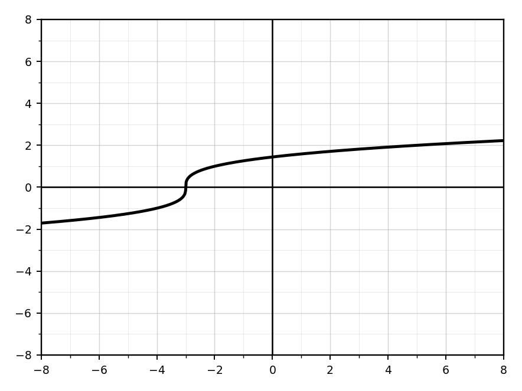
Solve \[\sqrt[3]{x+5}=x-1\]
Then explain how graph intersections help verify the solution.
A student says: “Checking solutions is unnecessary for cube root equations.” Respond using a specific example and explanation.
Compare these equations:
\(\sqrt[3]{x+4}=x\)
\(\sqrt[3]{x+4}=-x\)
Explain how changing the right side changes the possible solutions.
Solve \[\sqrt[3]{2x+1}=x+1\]
Then explain how the solution relates to intersections of two functions.
A student solves \(\sqrt[3]{x+9}=x-1\) and rejects a solution because it is negative.
- Is the reasoning correct?
- Explain what should actually be checked.
- Solve completely.
Create a written process or flowchart for solving cube root equations. Your process should include isolating, cubing, solving, and checking.
Compare the graphs of \(y=\sqrt{x}\) and \(y=\sqrt[3]{x}\). Explain how graph structure affects domain, range, number of intersections, and number of solutions.
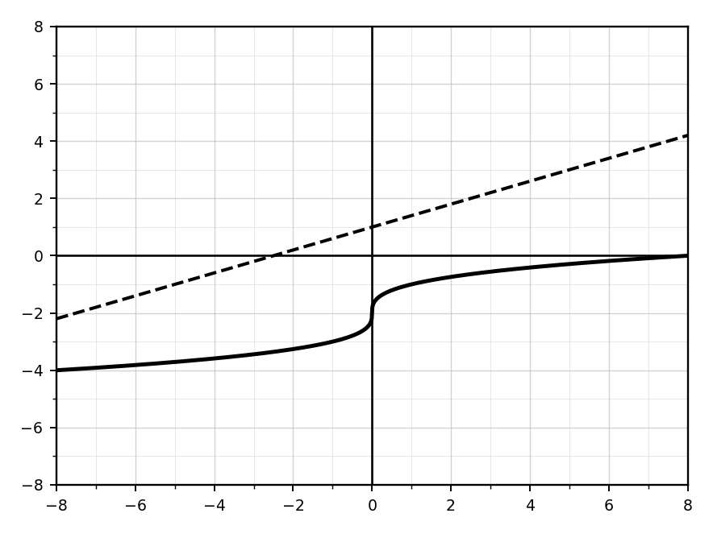
Compare \(f(x)=\sqrt{x-3}\) and \(g(x)=\sqrt[3]{x-3}\). Explain how their domains, ranges, and graph shapes differ.
Explain why square root functions have restricted domains but cube root functions usually do not.
A student says: “The graph of \(y=\sqrt{x-4}\) moves left 4 because of the minus sign.” Respond with a correction and explanation.
A student says: “The domain of \(f(x)=\sqrt{x+7}-2\) is \(x\ge 7\).” Identify the error and correct the domain.
Use transformations to explain why \(f(x)=-3\sqrt{x-2}+1\) has range \(y\le1\).
Analyze \(f(x)=\sqrt{x+4}-6\). State domain, range, locator point, \(x\)-intercept, \(y\)-intercept, and interval of increase/decrease.
Analyze \(g(x)=-2\sqrt[3]{x-1}+3\). State domain, range, locator point, intercepts, and interval of increase/decrease.
Given a graph of a square root function, write an equation and justify how each transformation appears in the graph.
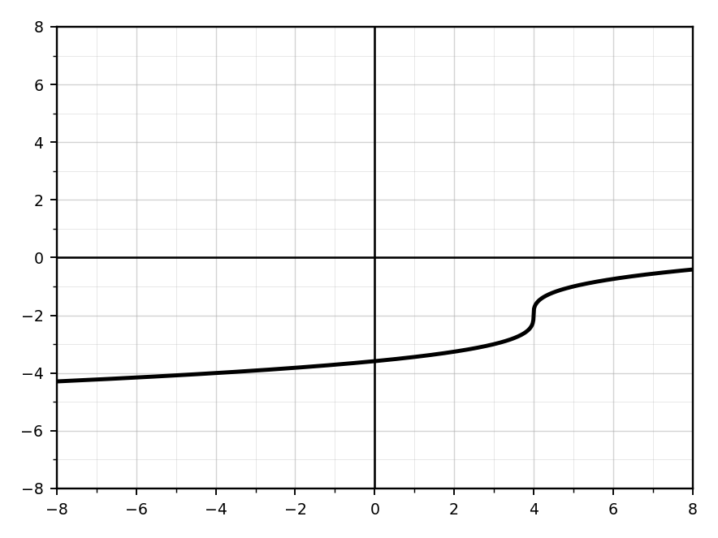
Given a graph of a cube root function, write an equation and justify how each transformation appears in the graph.
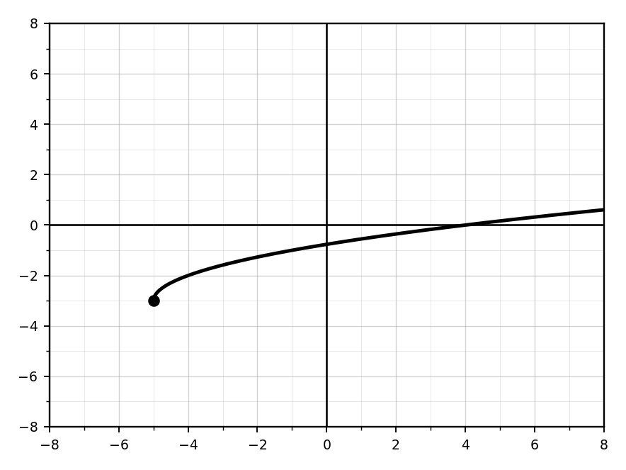
Compare \(f(x)=\sqrt{x}\) and \(g(x)=\sqrt{x}+4\). Explain how the range changes and why the domain does not.
Compare \(f(x)=\sqrt[3]{x}\) and \(g(x)=\sqrt[3]{x-5}+2\). Explain how the locator point changes but the domain and range remain all real numbers.
A function has domain \([2,\infty)\), range \((-\infty,5]\), and endpoint \((2,5)\). Write a possible square root function and justify your choice.
Explain why \(x^{1/2}\) has a restricted real-number domain, but \(x^{1/3}\) does not.
Compare \(x^{2/3}\) and \(x^{3/2}\). Discuss meaning, domain, graph shape, and how each can be rewritten with radicals.
A student evaluates \(32^{2/5}\) by squaring first and then taking the fifth root.
- Is the method valid?
- Is it efficient?
- Show a better method.
A student claims \(x^{1/2}+x^{1/2}=x\).
- Identify the misconception.
- Correct the simplification.
- Explain why exponent rules do not apply to addition the same way.
Simplify \(\frac{x^{5/2}y^{-1/3}}{x^{1/2}y^{2/3}}\). Then rewrite using radicals and positive exponents.
Analyze \(f(x)=-(x-3)^{1/2}+5\). State domain, range, locator point, intercepts, and interval of increase/decrease.

Analyze \(g(x)=2(x+1)^{1/3}-4\). State domain, range, locator point, intercepts, and interval of increase/decrease.

Use graphs of \(y=x^{1/2}\), \(y=x^{1/3}\), and \(y=x^{2/3}\). Compare their domains, ranges, intercepts, and symmetry.

A student says: “All rational exponent functions are just radical functions, so they all have the same shape.” Respond with examples and explanation.
Explain why the denominator of a rational exponent affects the type of root and therefore affects the graph’s domain.
Create a table of values for \(f(x)=x^{4/3}\) using \(x=-8,-1,0,1,8\). Then explain why the outputs are nonnegative.
Compare \(f(x)=x^{2/3}\) and \(g(x)=x^{4/3}\). Explain similarities and differences in graph shape, symmetry, and growth.
Create a quadratic equation with two irrational solutions, symmetric solutions, and solutions centered around \(x=5\). Then solve and verify.
Create a cube root equation whose solution is negative and non-integer. Then solve exactly or approximately.
Design a real-world problem that can be solved using \(x^2=d\).
- Define the variables.
- Write the equation.
- Solve.
- Explain which solutions make sense.
Design a real-world cube problem that requires solving \(x^3=d\). Then solve and interpret the answer.
Create an equation where isolating first is necessary, the final step requires square roots, and both solutions are integers. Then solve.
A student says: “Square root equations and cube root equations are basically the same.” Write a response comparing structure, number of solutions, graph behavior, and verification.
Create a graphable situation where \((x-2)^2=9\) represents intersections.
- Describe the graph.
- Explain why there are two intersection points.
Create a function whose graph intersects \(y=64\) at exactly one point. Explain why.
Design an error-analysis problem involving \((x-5)^2=49\).
- Write incorrect student work.
- Identify the misconception.
- Correct the work.
- Explain how to avoid the mistake.
Create a multi-representation problem involving an equation, a graph, and a table where students solve \(x^2=d\). Explain how all three representations show the same solutions.
Create a square root equation that has exactly one valid solution and one extraneous solution after squaring.
- Write the equation.
- Solve it.
- Identify the extraneous solution.
- Explain how you designed it.
Create a square root equation that has no real solution because all possible solutions are extraneous.
Show the algebra and explain why no solution remains.
Design a real-world problem that leads to a square root equation.
- Define the variables.
- Write the equation.
- Solve.
- Explain which solution makes sense in context.
A student argues: “Graphing is unnecessary because algebra always gives the answer.” Critique this claim using a square root equation that produces an extraneous solution.
Create an error-analysis problem involving \(\sqrt{x+7}=x-1\).
- Write incorrect student work.
- Identify the misconception.
- Correct the solution.
- Explain how checking reveals the error.
Design a graph-based square root equation problem where students solve by finding an intersection.
- Write the two functions.
- Describe the graph.
- Solve algebraically.
- Explain how the graph and algebra agree.

Create a square root equation with a solution greater than 10. Then solve and verify.
Create a square root equation where the first step is not squaring.
- Write the equation.
- Explain why isolating must happen first.
- Solve and check.
Create two square root equations that have the same squared equation but different valid solution sets. Explain why checking in the original equation changes the final answer.
Create a multi-representation problem involving an equation, a graph, and a table where students solve a square root equation and identify an extraneous solution.
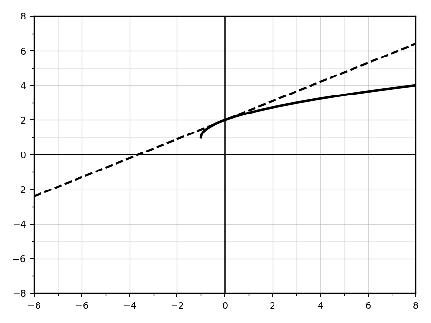
Create a cube root equation with one integer solution, a negative solution, and a transformed cube root expression. Then solve and verify.
Create a cube root equation whose solution is irrational. Then solve exactly or approximately.
Design a real-world problem modeled by \(\sqrt[3]{x}=a\).
- Define the variables.
- Write the equation.
- Solve.
- Explain the meaning of the solution.
A student argues: “Cube root equations are easier because they never create extraneous solutions.” Critique this statement using examples and reasoning.
Create an error-analysis problem involving \(\sqrt[3]{x+7}=x-1\).
- Write incorrect student work.
- Identify the misconception.
- Correct the work.
- Explain how checking helps.
Design a graph-based cube root equation problem where students solve by finding an intersection.
- Write the functions.
- Describe the graph.
- Solve algebraically.
- Explain how the graph and algebra agree.
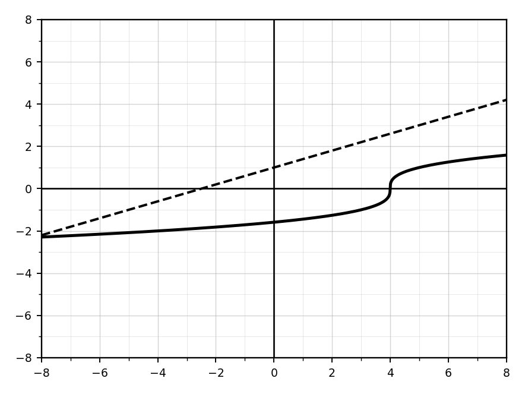
Create a cube root equation where the first step is not cubing.
- Write the equation.
- Explain why isolating must happen first.
- Solve and verify.
Create two different cube root equations that have the same solution. Explain why the equations are structurally different but equivalent.
Create a cube root equation whose graph intersects a line at exactly one point.
- Write the equation.
- Describe the graph behavior.
- Explain why only one solution exists.
Create a multi-representation problem involving an equation, a graph, and a table where students solve a cube root equation and explain how all three representations show the same solution.
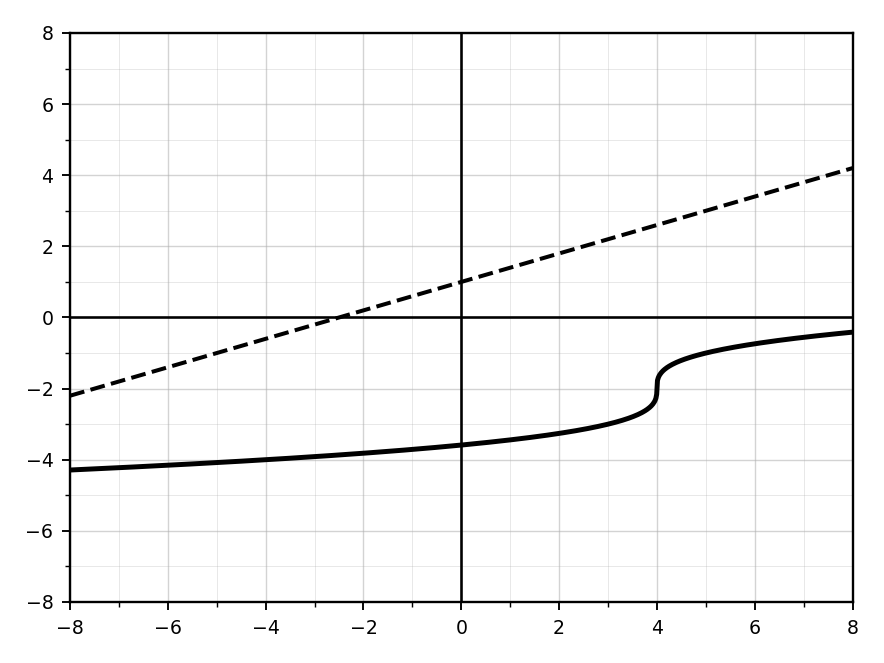
Create a square root function with domain \([-3,\infty)\), range \([4,\infty)\), and increasing behavior. Graph it and explain how your equation matches the conditions.
Create a square root function with endpoint \((5,2)\), reflected across the \(x\)-axis, and vertical stretch by 3. State the domain and range.
Create a cube root function with locator point \((-2,6)\), reflection across the \(x\)-axis, and vertical stretch by 2. Graph and explain your choices.
Design two different radical functions that share the same locator point but have different domains and ranges. Explain why the differences occur.
Create a square root function that passes through \((1,0)\) and has endpoint \((-3,-4)\). Verify that your function satisfies both conditions.
Create a cube root function that passes through \((0,1)\) and has locator point \((8,-3)\). Verify using substitution.
Design a real-world situation modeled by a square root function.
- Define the variables.
- Write a function.
- State the reasonable domain and range.
- Explain what the endpoint means in context.
Design a real-world situation modeled by a cube root function.
- Define the variables.
- Write a function.
- State the domain and range.
- Explain why negative inputs may or may not make sense.
Create an error-analysis problem where a student incorrectly identifies the domain and range of a transformed square root function. Write the incorrect solution, identify the misconception, and correct it.
Create a multi-representation problem involving an equation, a graph, and a table where students analyze a radical function’s domain, range, locator point, intercepts, and intervals of increase or decrease.
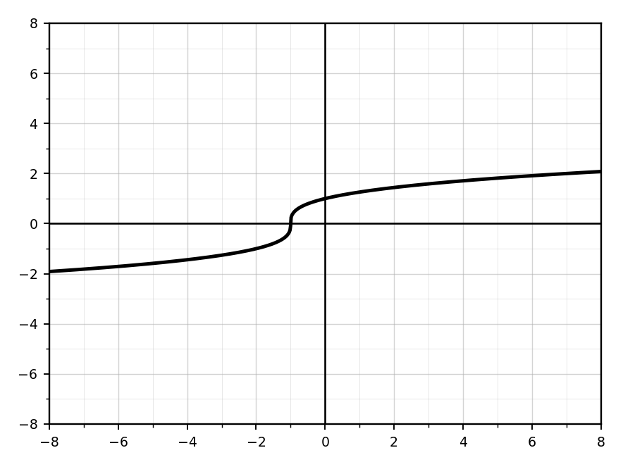
Create a rational exponent function with domain \([4,\infty)\), range \([-2,\infty)\), and increasing behavior. Write the equation and explain how it meets the conditions.
Create a rational exponent function with domain all real numbers, range \([0,\infty)\), and symmetry about the \(y\)-axis. Write the equation and justify.
Create two different rational exponent functions with the same locator point but different domains. Explain why the domains differ.
Design a real-world situation modeled by \(f(x)=a\sqrt{x-h}+k\).
- Define variables.
- Write the function.
- State a reasonable domain and range.
- Interpret the locator point.
Design a real-world situation modeled by a cube root or rational exponent function with domain all real numbers.
- Define variables.
- Write the function.
- Explain why negative inputs may make sense.
- Interpret the key features.
Create an error-analysis problem involving rational exponents.
- Write incorrect student work.
- Identify the misconception.
- Correct the work.
- Explain how to avoid the error.
Create a function involving rational exponents that passes through \((8,6)\) and has locator point \((0,2)\). Verify using substitution.
Create a multi-representation problem involving an equation with a rational exponent, a table, and a graph. Students must identify domain, range, intercepts, and intervals of increase/decrease.
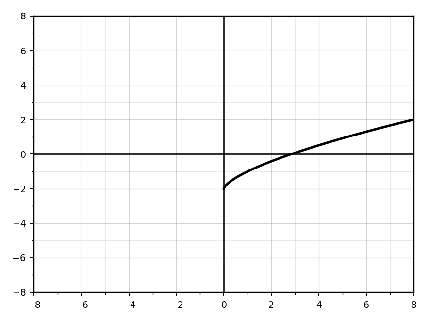
A student argues: “Technology is enough to understand rational exponent graphs.” Critique this claim using algebraic structure, domain restrictions, and graph interpretation.
Create a comparison task where students must decide which of three rational exponent functions best matches a graph. Include three equations, key graph features, and a justification prompt.